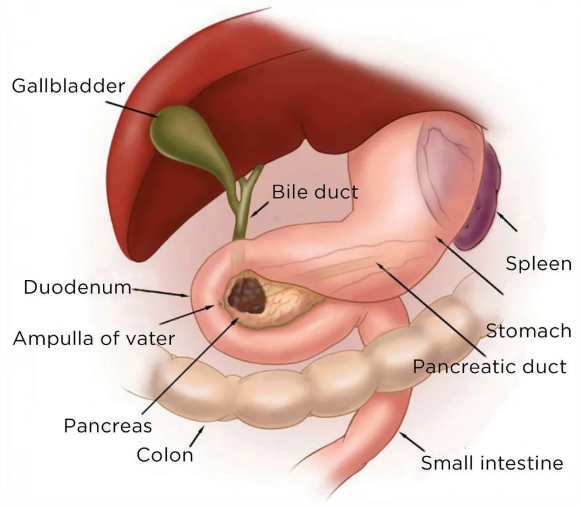
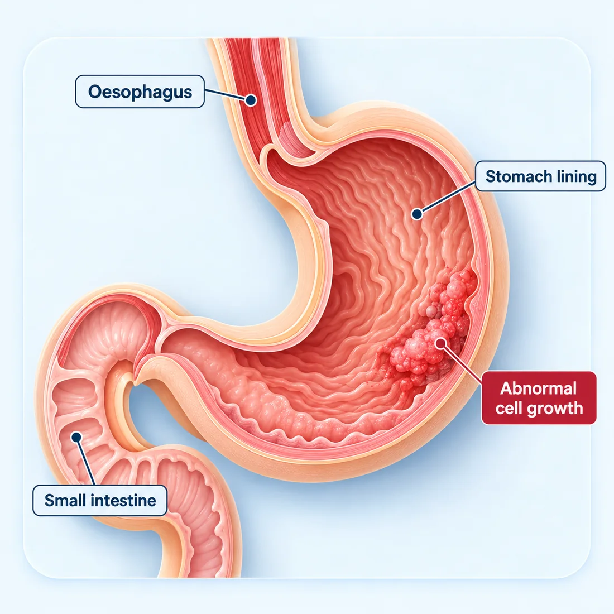
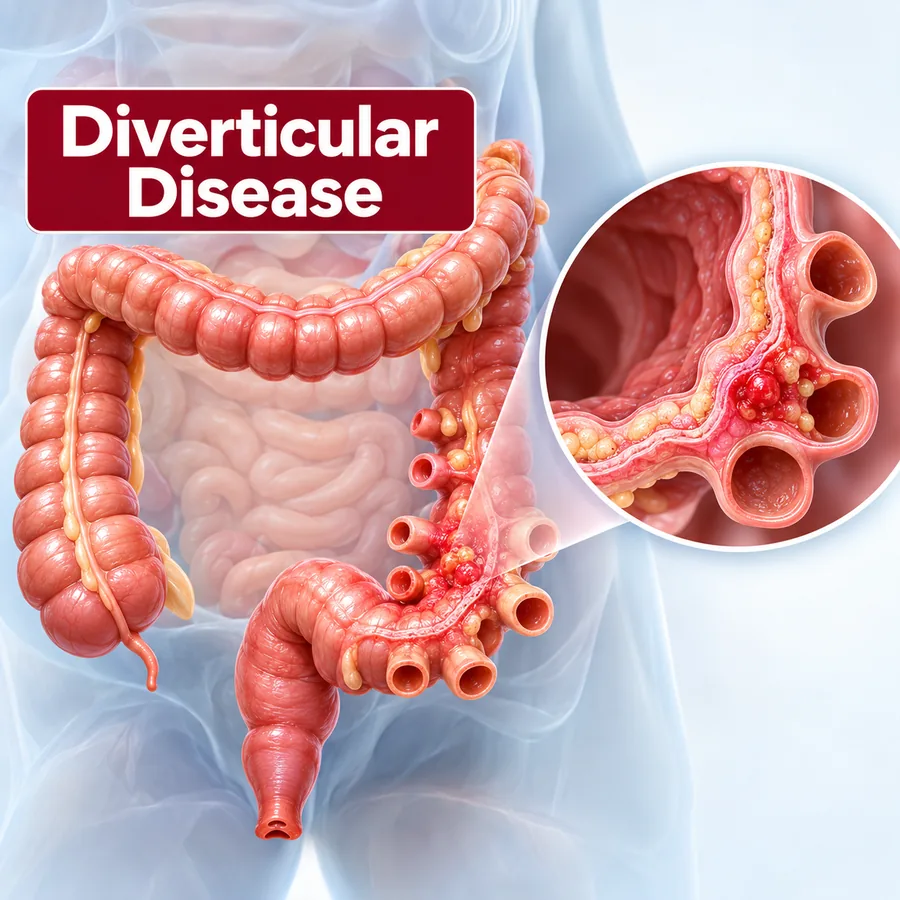
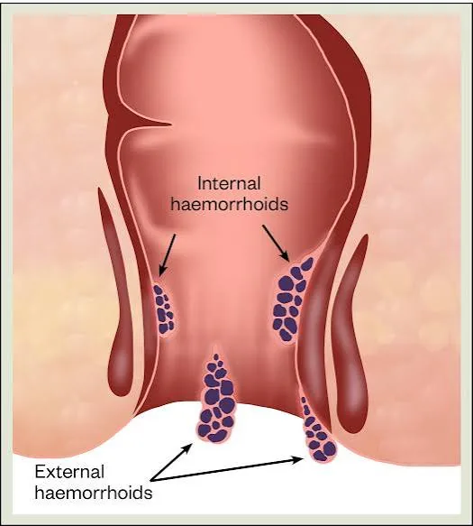
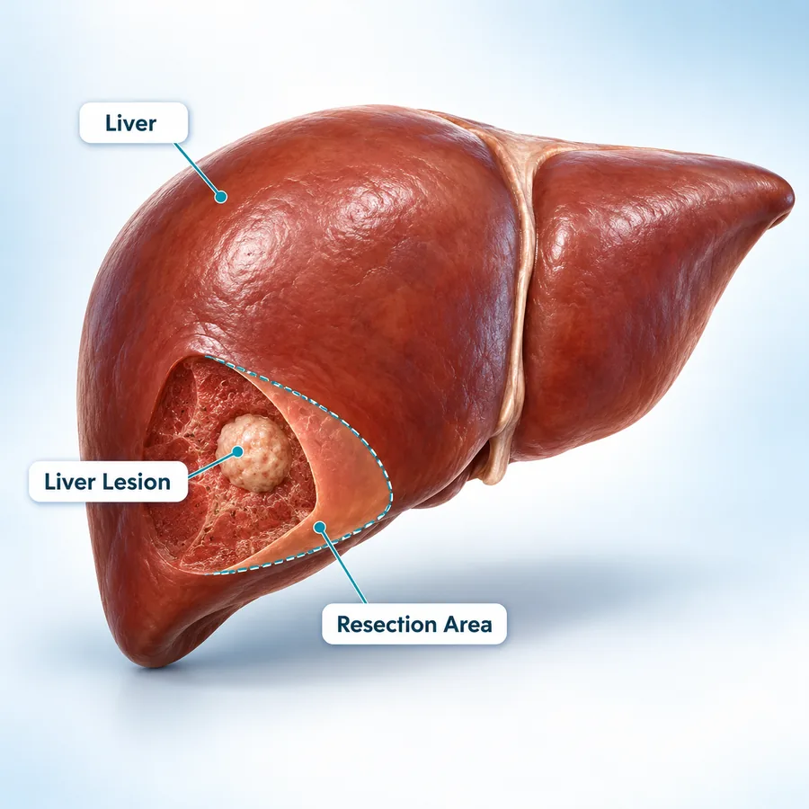

Persistent Abdominal Pain
Pain that keeps coming back, follows meals or wakes you at night.

Advitya Healthcares · Kolkata & Baruipur
KolkataBaruipur
Consultation venue and timings confirmed at the time of booking
WhatsApp UsGI surgery — surgical gastroenterology — treats diseases of the digestive system that need an operation. At Advitya Healthcares it is delivered by the Surgical Gastroenterology department, with consultations in Kolkata and Baruipur and 24×7 emergency cover at Advitya Hospital Baruipur. Cancers of the digestive system have a page of their own.
Your symptoms, examination findings, blood tests, scans, endoscopy reports and previous surgery are all considered before a plan is made. Whether an operation is needed at all, and whether a laparoscopic, robotic-assisted or open approach is suitable, is decided after assessment and explained to you before anything is agreed.
The surgical team is led by Dr. Deeksha Kapoor, a surgical gastroenterologist and HPB & GI surgical oncologist. She trained in surgical gastroenterology at Medanta – The Medicity, completed an HPB & GI Surgical Oncology Fellowship at Tata Memorial Hospital, Mumbai, is console-trained in robotic surgery on the Da Vinci Xi platform, and has pursued advanced HPB training in Japan, Germany and France. She leads the PancreaCare initiative at Advitya Healthcares.
Before surgery you are told what the operation involves, what anaesthesia is planned and what recovery looks like. After surgery you receive specific advice on diet, activity, wound care and follow-up. Sudden severe abdominal pain, vomiting blood, heavy rectal bleeding or a swollen, hard abdomen need emergency assessment the same day.
These symptoms have many causes. If they persist, a proper evaluation is better than waiting.
Pain that keeps coming back, follows meals or wakes you at night.
A bulge in the groin, at the navel or near an old scar, or a lump felt in the abdomen.
Blood in or on the stools, black stools, or blood in vomit.
Yellowing of the eyes or skin, with dark urine or pale stools.
Constipation, diarrhoea or a change in stools lasting more than a few weeks, or pain on passing stools.
Food sticking on the way down, feeling full early, or weight loss without trying.
Sudden severe abdominal pain, a swollen and hard abdomen, repeated vomiting with inability to pass gas or stools, vomiting blood, heavy rectal bleeding or high fever with abdominal pain require same-day assessment.
24×7 Emergency +91 92112 21553
GI surgery is the surgical treatment of diseases of the digestive system — from the oesophagus to the anus — together with the liver, gallbladder, bile ducts and pancreas.
Common operations such as gallbladder removal, hernia repair and appendix surgery; surgery for piles, fistula and fissure; bowel, stomach and oesophageal surgery; and operations on the liver, pancreas and bile ducts. It also covers emergencies such as appendicitis, bowel obstruction and perforation.
A gastroenterologist treats digestive conditions with medicines and endoscopy. A GI surgeon treats the conditions that need an operation. The two work together, so the decision to operate is made with the full picture.
Many GI operations can be done through small incisions with a camera — laparoscopic or robotic-assisted surgery — which usually means less pain and a quicker return to normal activity. Open surgery remains the safer choice in some situations.
Not every gallstone, hernia or pile needs an operation. The decision depends on your symptoms, the examination, the investigations and your general health, and some conditions are best managed without surgery.
Treatment should be planned on clinical examination, blood tests, imaging and, where required, endoscopy.
The main areas of gastrointestinal surgery at Advitya Healthcares. Each links to a page with more detail.

Surgery for stomach and oesophageal cancer, complications of peptic ulcers, and reflux or hiatus hernia not controlled by medicines.
Explore stomach surgery
Laparoscopic removal of the gallbladder for gallstones, inflammation and polyps, and treatment of stones that have moved into the bile duct.
Explore gallbladder surgery
Open and laparoscopic repair of inguinal, umbilical, incisional, femoral and recurrent hernias.
Explore hernia surgery
Surgery of the colon and rectum for diverticular disease, polyps, complications of inflammatory bowel disease and colorectal cancer.
Explore colorectal surgery
Treatment of haemorrhoids, anal fistula and anal fissure, from office procedures to surgery when other treatment has not helped.
Explore anorectal care
HPB surgery — liver resection, pancreatic surgery including the Whipple procedure, and bile duct surgery.
Explore HPB surgeryAppendix surgery and emergency abdominal conditions are assessed at Advitya Hospital Baruipur, which has 24×7 emergency cover.
The same operation can often be done in more than one way. Which one suits you is a clinical decision.
The operation is carried out through several small incisions using a camera and specialised instruments. It is used for gallbladder, hernia and appendix surgery and for many bowel and stomach operations.
A form of minimally invasive surgery in which the surgeon controls the instruments from a console, giving a magnified three-dimensional view and fine movement in tight spaces.
The surgeon works through a single larger incision. It remains the safer choice for some complex operations, some emergencies and abdomens with extensive previous surgery.
Urgent surgery for conditions such as appendicitis, bowel obstruction, perforation, strangulated hernia and some causes of bleeding, after rapid assessment and resuscitation.
The appropriate approach is decided after clinical evaluation and explained to you, with its benefits and risks, before surgery.
Specialist care with a patient-first approach.
GI surgery led by a surgeon trained in surgical gastroenterology and HPB & GI surgical oncology at high-volume centres.
Laparoscopic and robotic-assisted approaches considered according to clinical suitability.
Access to blood tests, ultrasound, CT, MRI and endoscopy so a diagnosis is reached before surgery is planned.
Treatment is planned according to your symptoms, investigations and individual clinical situation.
An emergency doctor on site at Advitya Hospital Baruipur for urgent abdominal conditions.
Clear communication before surgery, during recovery and throughout follow-up, in Kolkata and Baruipur.
Symptoms, medical history and previous surgery are reviewed.
Blood tests, ultrasound, CT or endoscopy as required.
Whether surgery is needed, and which approach, is decided with you.
The planned operation, with pre-operative preparation.
Pain control, early walking and a gradual return to eating.
Wound review, reports and advice on returning to normal life.
Consultation, treatment and follow-up organised around the patient.
GI surgery delivered by a specialist surgical gastroenterology team.
Consultation, theatre, imaging and endoscopy facilities used for planned and emergency surgery.
Time to discuss your symptoms, reports, treatment options and recovery.
Consultations available in Kolkata and Baruipur.
General information only. Advice for your own condition comes from your consultation.
GI (gastrointestinal) surgery, also called surgical gastroenterology, is the surgical treatment of diseases of the digestive system — the oesophagus, stomach, small and large intestine, rectum and anus — together with the liver, gallbladder, bile ducts and pancreas.
A gastroenterologist diagnoses and treats digestive conditions with medicines and endoscopic procedures. A GI surgeon treats conditions that need an operation. The two often work together, and many patients see both during their care.
Common examples are gallstones causing symptoms, hernias, appendicitis, piles, fistula and fissure not settling with other treatment, bowel obstruction, complications of ulcers, and cancers of the digestive organs. Whether you need an operation is decided after examination and investigations.
No. Many GI operations can be done laparoscopically, but suitability depends on the condition, previous abdominal surgery, the emergency situation and your fitness for anaesthesia. Your surgeon explains which approach is safest for you.
It depends on the operation. Many laparoscopic gallbladder and hernia operations need a short stay, while major bowel, stomach, liver or pancreatic surgery needs several days or longer. You are given an estimate before surgery.
Bring your previous prescriptions, blood test results, scan and endoscopy reports, and the films or CDs where you have them. A list of your current medicines and any previous operations is also helpful.
Sudden severe abdominal pain, a swollen and hard abdomen, repeated vomiting with inability to pass gas or stools, vomiting blood, heavy rectal bleeding or high fever with abdominal pain need urgent assessment. Go to your nearest emergency department the same day.
Consult our experienced surgical team for evaluation and personalized treatment planning.
Six fields, nothing clinical. We will call you back to confirm.